账户管理(一)
账户管理(一)¶
1.MySQL账户管理¶
-
在我们之前登录MySQL的时候我们都是直接使用的root用户，root用户属于数据库系统中的超级管理员，有权限对mysql进行任何想要做的操作。
-
如果在生产环境下操作数据库时也是全部直接使用root账户连接，这就和悬崖边跳舞差不多。所以 创建特定的账户，授予这个账户特定的操作权限，然后连接进行操作 比如常规的crud 才是正道。
-
MySQL账户体系：根据账户所具有的权限的不同，MySQL的账户可以分为以下几种
- 服务实例级账号：，启动了一个mysqld，即为一个数据库实例；如果某用户如root,拥有服务实例级分配的权限，那么该账号就可以删除所有的数据库、连同这些库中的表
- 数据库级别账号：对特定数据库执行增删改查的所有操作
- 数据表级别账号：对特定表执行增删改查等所有操作
- 字段级别的权限：对某些表的特定字段进行操作
- 存储程序级别的账号：对存储程序进行增删改查的操作
注意：进行账户操作时，需要使用root账户登录，这个账户拥有最高的实例级权限。账户的操作主要包括创建账户、删除账户、修改密码、授权权限等。
需要使用实例级账户登录后操作，以root为例
主要操作包括：
- 查看所有用户
- 修改密码
- 删除用户
2. 查看所有用户¶
- 所有用户及权限信息存储在mysql数据库的user表中
- 查看user表的结构
1 2 | |
- 主要字段说明：
- Host表示允许访问的主机
- User表示用户名
- password表示密码，为加密后的值
查看所有用户
1 | |
结果 taobao.com jd.com itheima.com zhangsan 123456
1 2 3 4 5 6 7 | |
3. 创建账户、授权¶
- 需要使用实例级账户登录后操作，以root为例
- 常用权限主要包括：create、alter、drop、insert、update、delete、select
- 如果分配所有权限，可以使用all privileges
步骤
1 2 3 4 5 | |
示例1:
创建一个laowang的账号，密码为123456，只能通过本地(localhost)访问, 并且只能对day26数据库中的所有表进行读操作
- step1：使用root登录
1 2 | |
- step2：创建账户并授予所有权限
1 2 3 | |
说明
- 可以操作day26数据库的user表，方式为:
day26.user - 访问主机通常使用 百分号% 表示此账户可以使用任何ip的主机登录访问此数据库
-
访问主机可以设置成 localhost或具体的ip，表示只允许本机或特定主机访问
-
查看用户有哪些权限
1 | |
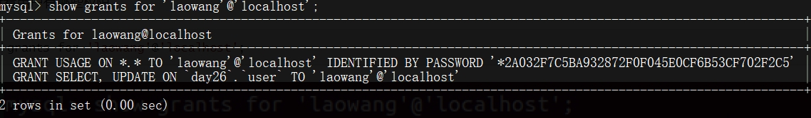
- step3：退出root的登录
1 | |
- step4：使用laowang账户登录
1 | |
- 登录后效果如下图 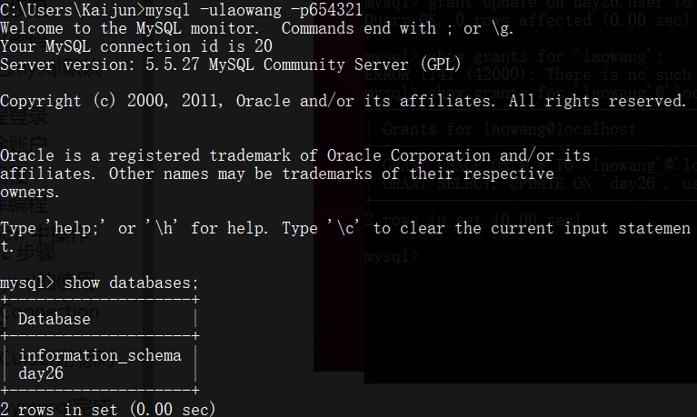
- 查看
day26数据库中的表 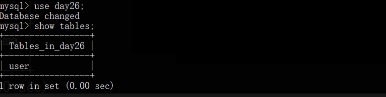 -
查看
day26.user表中的数据 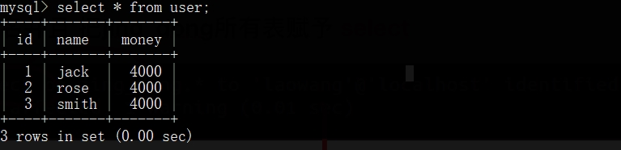 -
前面的这些查询操作我们都能愉快的验证通过,那么接下来我们来修改一下数据试试
1 | |
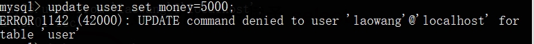
这里提示说:更新命令被拒绝啦!laowang这个用户没有对user表执行update的权限.还记得我们前面授予的权限吗?
1 2 3 4 | |
示例2
创建一个laoli的账号，密码为123456，可以任意电脑进行链接访问, 并且对day26数据库中的所有表拥有所有权限
注意:需要使用root账户才能进行创建用户和授权
1 2 3 4 5 | |
-
使用
'laoli'@'localhost'进行登录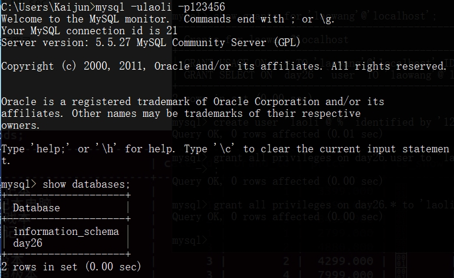 -
查看所有的表
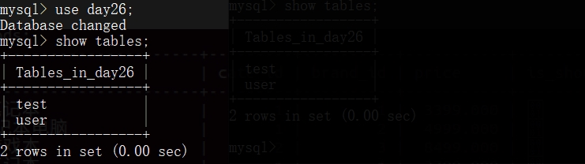
哇塞,当我们授权day26.*的时候,我们可以查看到day26这个数据库的中的所有的表喔!
- 下面我们来查看一下表中的数据
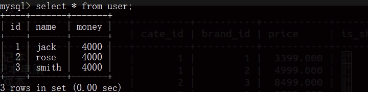
- 我们再来更新一下数据试试
- 看这个时候,就没有再出现权限被拒绝的情况啦! 因为laoli的权限为
all privileges
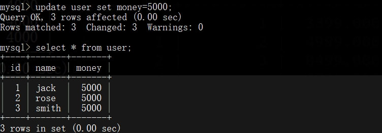
账户管理(二)¶
1. 删除权限¶
1 2 3 4 5 6 | |
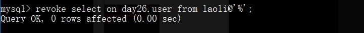
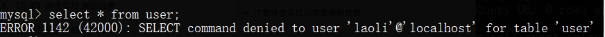
2. 修改密码¶
使用root登录，修改mysql数据库的user表
- 使用password()函数进行密码加密
1 2 3 4 | |
- 注意修改完成后需要刷新权限
1 | |
1 2 3 4 5 | |
!!! 忘记mysql默认密码¶
假设我们忘记了密码或者输错了密码, 输入 mysql -uroot -p ，回车输入密码进入数据库就会出现这样到错误；
1 | |
解决方案：密码置空+修改密码
第一步，停止MySQL服务
1 2 3 4 5 | |
第二步，编辑MySQL配置文件：
编辑mysql的配置文件
1 | |
在[mysqld]段下加入一行“skip-grant-tables”。让mysql跳过正常验证（非常危险，尽快操作）
1 2 3 4 | |
保存文件，并退出编辑模式
第三步，启动MySQL服务：
1 2 3 | |
第四步，控制台直接输入mysql 即可登录到 mysql控制台
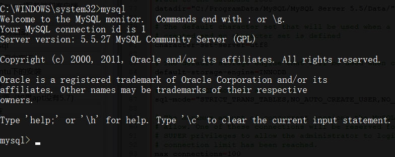
第五步，修改密码，将laowang的密码设置为123123
1 2 3 | |
第六步，退出控制台，并修改mysql启动方式为普通模式
再次编辑 mysql 配置文件，注释或删除此行 skip-grant-tables 并保存退出
1 | |
第七步：重启 mysql服务，此时密码就为空了
1 2 3 4 5 6 7 8 | |
第八步: 使用laowang用户，密码为123123登录
1 2 3 4 5 6 7 8 9 10 11 12 13 14 | |
4. 删除账户¶
- 语法1：使用root登录
1 2 3 | |
- 语法2：使用root登录，删除mysql数据库的user表中数据
1 2 3 4 5 6 | |
- 推荐使用语法1删除用户, 如果使用语法1删除失败，采用语法2方式
忘记 root 账户密码怎么办 !!
- 一般也轮不到我们来管理 root 账户,所以别瞎卖白粉的心了